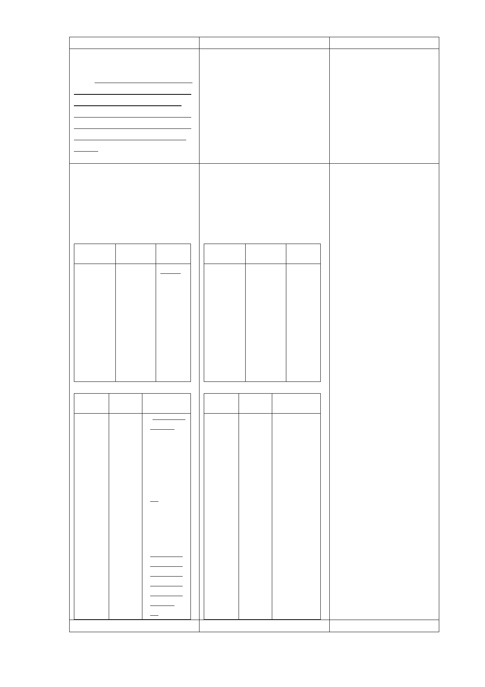

新計畫
参、計畫原則與構想
三、開發強度
為提高公有土地利用效
能，並配合本市公營住宅政
策，滿足市民基本居住需
求，在不影響周邊交通服務
水準，及原機關用地容積率
400％上限下，進行規劃開
發。
肆、計畫內容
一、土地使用計畫及分區管
制
(一)各使用分區之使用性
質、土地及建築物之使用管
制如下表所示：
位置
信義區福
德段二小
段部分
319、
331、
332、部分
361-1、
319-2、
321-1、
322-1、及
部分320
地號
土地使
用分區
社會福
利設施
用地
容積率
400％
位置 土地使 使用性質及
用分區 管制內容
信義區 第三種 3.福德街派
福德段 商業區 出所及捷
二小段 （特） 運設施地
部分
上突出物
320、
（出入
335、
口、通風
342地
口等）皆
號 需整併設
置於商業
區內。
4.不適用開
放空間綜
合設計獎
勵規定及
「臺北市
建築物增
設室內公
用停車空
間鼓勵要
點」規
定。
伍、事業及財務計畫
原計畫
說明
参、計畫原則與構想
配合本府公營住宅政策，
三、開發強度
在周邊道路服務水準、停
本計畫區原屬機關用 車需求等可負荷之前提
地，建蔽率40％、容積率400 下，參酌原機關用地開發
％，惟地區現況發展強度密 強度之規定進行後續開
集，公共設施服務水準不 發。
佳，宜降低整體開發強度，
故比照鄰近第三種住宅區容
積率之225％進行本計畫區
開發總量管制。
肆、計畫內容
1.原廣慈博愛院為機關用
一、土地使用計畫及分區管
制
(一)各使用分區之使用性
質、土地及建築物之使用管
制如下表所示：
地，容積率為400%，於
95年變更時基於地區公
共服務水準不佳，爰將
全區容積率比照周邊第
三種住宅區225%為基
準，採容積調配方式，
位置
信義區福
德段二小
段部分
319、
331、
332、部分
土地使
用分區
社會福
利設施
用地
容積率
210％
將社福用地容積率訂為
210%，商業區442%，公
園用地60%。現因本府為
兌現公營住宅政策，增
加住宅存量，滿足市民
居住需求，達成公營住
宅興闢效益及增進公共
設施之利用率，經本府
361-1、
檢討附近交通水準情況
319-2、
321-1、
322-1、及
部分320
地號
及公共設施負擔下，將
社福用地容積率提高至
400%，惟全區容積總量
仍不高於95年都市計畫
變更前之全區容積率
位置
信義區
福德段
二小段
部分
320、
335、
342地
號
土地使 使用性質及
用分區 管制內容
第三種 3.福德街派
商業區 出所及捷
（特） 運設施地
上突出物
（出入
口、通風
口等）皆
需整併設
400%。
2.考量商業區開發時程，
及福德派出所建物使用
年限，故刪除福德派出
所需整併設置於商業區
內之規定。後續再視其
實際需求檢討設置於社
會福利設施用地或公園
用地。
3.因「臺北市建築物增設
至於商業
室內公用停車空間鼓勵
區內。
4.不適用開
放空間綜
要點」已停止適用，故
配合刪除相關文字。
合設計獎
勵規定及
「臺北市
建築物增
設室內公
用停車空
間鼓勵要
點」規
定。
伍、事業及財務計畫
配合實際規劃年期修
- 13 -